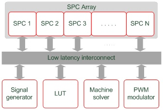

FPGA solver basics
This section describes the FPGA solver basics, including Standard Processing Cores, signal generators, LUT (Look-up-table), machine solver, and PWM modulator.
Typhoon HIL FPGA Solver
FPGA solver computational elements are depicted in Figure 1. Other functional elements are omitted for simplicity. The architecture is scalable and is used on all Typhoon HIL devices where it is available in a number of different configurations in order to make the best use of available FPGA resources. Configurations are tailored for specific application domains and they differ in number and size of computational elements. For more information on configurations for specific devices, please refer to the Device Configuration Table documentation.
Descriptions of each of the FPGA resources are provided in Figure 1. Additionally, a complementary overview of these resources is available in the Video Knowlegebase and as part of the HIL Fundamentals course.

SPC
The SPC (Standard Processing Core) is a basic building block of the circuit solver. It is in charge of simulating electrical circuits consisting of:
- linear passive elements - both constant and time varying*,
- converter blocks consisting of ideal switches,
- contactors based on ideal and non-ideal switches*,
SPC blocks are interconnected through dedicated communication lines which allows them to exchange variables with a single simulation step delay.
Signal generator
The signal generator block is in charge of generating arbitrary waveforms at the full simulation rate. It is mainly used for independent voltage and current sources. It employs linear interpolation in cases when waveform sample rate is lower that the simulation rate. The number of signal generator channels depends on the solver configuration.
LUT
The Look Up Table unit is used to simulate behavior of nonlinear elements, such as PV panels, batteries, nonlinear passive components, and saturable transformers. A number of LUT channels depends on the solver configuration.
Machine solver
The machine solver emulates a single electrical machine model including its electromagnetic part, mechanical part and speed measurement devices such as an encoder and resolver. A number of machine solvers depends on the solver configuration.
PWM modulator
The multi-channel triangular/sawtooth PWM modulator can be used both internally, to drive internal converter models, and externally, through digital outputs. It runs on the FPGA internal clock and features a built-in dead time generator. The number of PWM channels depends on the solver configuration. The PWM modulator frequency is based on the IO timing of the HIL device. More information is available in the IO Timing section of each HIL Simulator device's documentation.